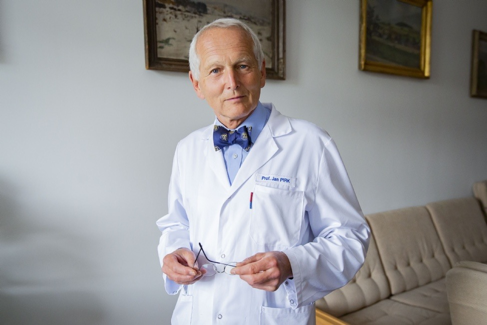
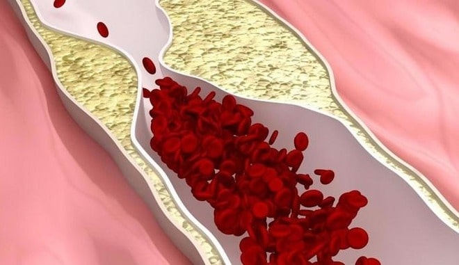
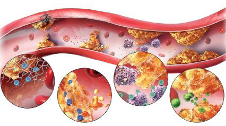
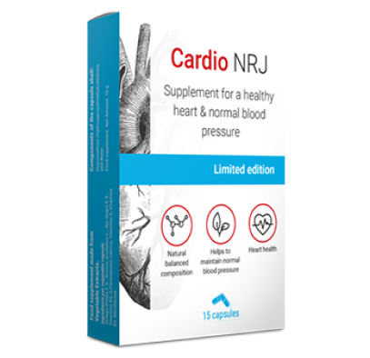

Věk není překážkou žít dál! Akademik odhalil tajemství, jak dosáhnout vynikajícího zdraví a dlouhověkosti
Simple text.
Jan Pirk - Slavný Český kardiochirurg, V roce 1991 se stal přednostou Kliniky kardiovaskulární chirurgie IKEMu, o čtyři roky později pak i přednostou celého Kardiocentra IKEMu. Roku 1991 provedl první transplantaci srdce. V roce 1997 se stal docentem a byl mu byl udělen titul nejlepšího manažera ve zdravotnictví. Jan Pirk vyvinul inovativní metodu léčby vysokého krevního tlaku!
Dr. Jan Pirk říká, že tajemství dlouhověkosti je v plavidlech. Pokud jsou čisté a zdravé, můžete svůj život snadno prodloužit o 15–20 let!
Našemu korespondentovi se podařilo provést rozhovor s doktorem Janem Pirkem, který podrobně popsal metodiku čištění cév a prodloužení života.

Fotografie z pracovního místa Jana Pirka
- Pane doktore, pořád tvrdíte, že čištění cév je základem zdraví. Proč si tak myslíte?
Každý ví, že vysoký tlak, mozková mrtvice, problémy se srdcem - je výsledkem „znečištění“ cév cholesterolovými plaky. jsou to kardiovaskulární choroby. ale počítejte se s tím, že to je jenom malá část z toho. cevy s cholesterolovými plaky jsou příčinou 6 z 7 chronických chorob, které jsou nelečitelné.
Co jsou kontaminované cévy? Představte si zašpiněnou trubici. Co se nakonec stane? V důsledku toho stoupá tlak vody a voda samotná se stává bez chuti. Totéž se stane s cévy. Když se tam ukládá cholesterol nebo jiné látky, zvyšuje se tlak (kontaminované cévy jsou hlavní příčinou hypertenze!). Samotná krev se znečišťuje, takže celé krevní zásobování orgánu je špatné. V důsledku toho, trpí orgány a systémy celého organismu. Koneckonců, se to odráží i na pokožce.
 Takže, dochází k postupnému znečištění krevních cév. Pokud jste je nikdy nečistili a jste starší než 48 let, jsou vaše cévy velmi špinavé. Brzy to ovlivní vaše zdraví, pokud již není ovlivněno.
- Pane doktore, existují-li nějaké příznaky, které umožňují člověku pochopit, že cévy potřebují očistu?
Ano, samozřejmě. Mezi hlavní příznaky patří:
- Migrény
- Zhoršení paměti
- Chronická únava
- Nespavost
- Problémy v intimní sféře
- Zhoršení zraku a sluchu
- Vysoký krevní tlak
- Dusnost a stenokardie
- Bledá pokožka na rukou a nohou
- Bolesti svalů a kloubů.
 Ve skutečnosti se krevní cévy velmi rychle kontaminují, zejména u starších lidí. Na to nemusíte se celý den stravovat hamburgery nebo hranolky. Stačí sníst jednu klobásu nebo smažené vejce, pak se v cévách ukládá určité množství cholesterolu. Za nějaký čas se znečištění hromadí.
Pane Pirk, pokud tomu správně rozumím krevní cévy jsou z 90% zodpovědné zdraví těla? Proč je tomu tak?
Krevní cévy nejsou pouze nějaké trubice. Je to složitý, jediný orgán, jehož zničení okamžitě končí utrpením.
1) Bolestí nohou - křečové žíly, otoky a věčný pocit těžkých nohou, chladu nebo trápný pocit pálení v nohou.
2) Ucpané cévy znamenají špatnou výživu jater – to pak přechází v hepatitidu. Hořkost v ústech. Po konzumaci tučného jídla - žáha a říhání.
3) Slabé a kontaminované kloubní cévy – suchá chrupavka. Existují bolesti ze země a kloubů, ohromující osteochondróza, objevují se kýly.
4) Anální cévy se oslabují – hemoroida se zhoršuje s fialovými hrboly.
5) Oční krevní cévy - zhoršuje se zrak. Vyvíjí se katarakt. Zčervenání očí, které se často chceme zbavujeme únavy, je vlastně mikrohemoragie - prasknutí nejmenších očních kapilár.
6) Cirkulace krvi v mozku se stává obtížnou - například závratě, tinnitus a špatná paměť. Už jste se s tím třeba setkaly, něco jste potřebovali v kuchyně a jakmile se tam dostanete, nepamatujete si co jste tam chtěli. Nebo můžete zapomenout nějaké běžné slovo. To vše jsou známky zhoršení stavu mozkových cév.
A samozřejmě- nejčastější příčinou cévních chorob - hypertenze. A hypertenze je vede k mrtvici anebo srdečnímu infarktu.
Jídlo je náš potravinový systém, život v těchto nádobách cirkuluje sám. Blokujete důležitou část trasy a váš život se zastaví
Například s nadváhou úzce souvisí s ucpanými cévy. Cévy ucpané cholesterolem způsobují hladovění všech orgánů, krevní cévy jim nemohou dodávat potřebné množství živin. Proto mozek vysílá signály - musíte jíst. A jíte. Ale tělo stále ještě potřebuje více jídla, protože není nasycené. Mozek znovu rozkazuje – snězte něco. A znovu a znovu.
Proto pořád potřebujete občerstvení, chuť na sladké a tučné jídlo - tělo potřebuje kalorie.
Když kolegové říkají pacientům: „Máte vysoký krevní tlak způsobený nadváhou.“ Mylně pletou příčinu s důsledkem. Hypertenze není způsobena nadváhou. Nadváha je způsobena hypertenzí.
I když tyto příznaky u Vás nejsou, stále musíte vyčistit cévy nejméně jednou za 4-5 let po 36 letech života. Zdraví bude v tomto případě pevné.
- Mohl byste nám sdělit své tajemství čištění cév?
Pro bezpečné čištění krevních cév mohu zmínit pouze jeden lék který má bezvadné účinky - CARDIO NRJ. Čištění cév prodlužuje život o 19 až 23 let, dodává energii a relaxaci, a nikoli kvůli utrpení a ztrátě vitality.
Lék je bezpečný jako bylinný čaj. A co se týče účinnosti léku, zaujímá druhé místo po chirurgickém očištění krevních cév. Na rozdíl od chirurgie však nemá komplikace ani vedlejší účinky. Tento postup čistí všechny krevní cévy v těle. Od velkých, tlustých tepen po nejmenší, nejtenčí kapiláry.
Škodlivé látky které se hromadí v průběhu let, které způsobují intoxikaci cév, se vyčišťuje CARDIO NRJ po dobu 1,5 až 2 měsíců pravidelného příjmu.
 Po 1,5 měsíci CARDIO NRJ rozpustí a odstraní 3400g cholesterolových plaků. Zkapalňuje 900 g - 1.2 kg trombotické hmoty a vyluhuje 400–500 g kalcifikace.
S nimi zmizí bolesti hlavy, tinnitus zmizí. Mozek, správně zásobený krví přes čisté cévyi, běží rychlostí superpočítače. Myšlenky jsou jasné a přesné.
Pocity se zesilují, příjemně slyšíte různé zvuky, kterým jste předtím nemohli věnovat pozornost. Sluch se zlepšuje, dokonce můžete rozumět tichému rozhovoru v jiné místnosti.
Můžete konečně pocítit různé vůně. Jíž nemáte ucpaný nos, rýmu a alergie. Průdušky jsou obnoveny. Dýchání je lehké a pravidelné. Čerstvý vzduch plní plíce, a máte pocit lehké euforie.
Vůně se stávají jasnými a nasycenými. Obyčejné jídlo se stává neobyčejnou radostí. Jíte méně a více. Neustálá touha po sladkostech a tuku zmizí
To hezký působí. Ve skutečnosti jsem o přípravku CARDIO NRJ slyšel poprvé. I když pořád slyším o nutraceutikách. V Japonsku a Izraeli si jako své preferované zacházení legálně stanovili nutraceutický status. A v Česká republika tyto prostředky stále nejsou důvěryhodné.
Dovolte mi, abych vám prozradil příběh o nedůvěre.
V roce 1929 bylo vynalezeno první antibiotikum, penicilin. Když lidé nevyhnutelně zemřeli, snadno léčil úplavici a tyfus.
Většina lidí však nevěřila, že by to mohlo pomoct, protože byli 100 krát zklamáni, když se snažili rehabilitovát. Ale ti, kteří byli zklamaní 100 krát ale nebálí se 101 pokusů, se zotavili. A ti, kdo se vzdali, mávli rukou a řekli: "Další skvělý lék, který nepomůže" zmizel, ačkoli přežití bylo přímo pod nosem.
Stejně jako penicilin porazil nemoc: úplavici, tyfus a plicní mor. Takže v průběhu času bude CARDIO NRJ odstraňovat cévní onemocnění. První kroky již byly učiněny - Japonsko, Kanada, Korea, Švýcarsko a Izrael - schválily zákony pro čištění krevních cév pomocí nutraceutik namísto protidrogové terapie.
V Česku je přípravek CARDIO NRJ oficiálně registrován pouze na jednom místě - v nemocnici v Praze. Takto se u nás interpretuje "sociální lék" - který mohou používat jen ministři, poslanci, celebrity a další elity. Zacházejí s nimi v souladu s izraelskými protokoly a pokyny našeho ministra zdravotnictví jim nevydávají vyhlášku. Proto mají pacienti výsledky, nejen nekonečný proces.
Myslím si, že pochybnost je náš nejhorší nepřítel, takže se nebojím zkusit něco nového.
Ministerstvo zdravotnictví nabízí ostatním našim občanům ošetření chemickými látkami vyráběnými v továrnách patřících bohatým lidem, které svoje výrobky používat nechtějí.
Naše pochybnosti nás můžou zradit, kvůli čemuž ztratíme hodně z toho, čeho bychom mohli dosáhnout, kvůli strachu z pokusu.
Představte si, že si koupíte CARDIO NRJ, otevřete balíček ... Co se stane dál? Jak tento lék funguje?
Jakmile kapsle vstoupí do těla, spusťte skutečnou přirozenou laboratoř. Tobolka reaguje a začíná okysličovací proces přírodních extraktů CARDIO NRJ.
Po nasycení vlhkostí a kyslíkem získají léčivé výtažky účinek peroxidu vodíku – oxygenace
Molekuly CARDIO NRJ jsou malé kyslíkové bomby. Snižuje hladinu cholesterolu a zajišťují volný průtok krve.
V Německu CARDIO NRJ jmenuji „ Přípravek na léčbu cév“. To velmi přesně odráží jeho podstatu.
Takže - složení léku poskytuje okamžitou absorpci živých částic. Extrakty obohacené kyslíkem se snadno vstřebávají do cév. Proto CARDIO NRJ nezpůsobuje pálení žáhy, hořkost v ústech, říhání, nedráždí střeva a chrání žaludek.
Chtěl bych také poznamenat, že tento lék neobsahuje chemii, ale pouze vysoce koncentrované přírodní výtažky z rostlin, které jsou užitečné pro čištění cév, proto nejsou škodlivé pro tělo, a také velmi užitečné.
Mám stále pacienty které mě kontaktují, včetně toho, že chtějí vyčistit cévy. Teď doporučuji pouze tento lék. Pomáhá to všem a velmi dobře.
Na webu Výzkumného ústavu kardiologického jsou k dispozici oficiální statistiky pro čištění krevních cév, které byly získány na základě výsledků klinických studií. Celkově se studie zúčastnilo asi 2000 pacientů. Všichni se zúčastnili kurzu CARDIO NRJ.
Pokud říkám správně, CARDIO NRJ zmizel z většiny lékáren? Proč?
Bohužel ano. Od začátku tohoto roku již není CARDIO NRJ k dispozici v lékárnách.
Konflikt byl způsoben chamtivostí farmaceutického řetězce, který vyžadoval 10 00Kč navíc od prodeje každého CARDIO NRJ! Vzhledem k vysoké sazbě ceny výrobce (náklady na CARDIO NRJ v některých lékárnách v Praze dosáhly 20 00 korun), farmaceuti chtěli zavést pro výrobce přípravku dodatečný poplatek.
Zástupci lékáren se ospravedlňují to tím - že tak velké poplatky za prodej jim umožní přežít. Navíc po očištění cév tímto práškem již bývalý pacient nepotřebuje léky, které neustále užíval! Lidé přestávají snižovat krevní tlak a nekupují léky proti bolesti. Výrazně se snížila spotřebu léků na astma a diabetes. A to pro farmaceutické firmy znamená ztrátá peněz. Proto požadovali od společnosti CARDIO NRJ nejvyšší cenu.
V důsledku toho výrobce CARDIO NRJ přerušil kontakty se všemi lékárnami a přešel na distribuci výhradně přes internet. V zásadě je to správné. Posuďte sami: nemusíte platit nájemné za pronájem místa prodeje, úplatky lékárnám nejsou nutné. Proto je nyní CARDIO NRJ k dispozici jako speciální nabídka.
Slevový program „čisté cévy“
Náš medicínský ústav společně s Národním střediskem pro lékařský výzkum v kardiovaskulární chirurgii a výrobcem CARDIO NRJ zahájil program výhod v rámci projektu telemedicína (internetové lékařství).
Co je třeba udělat, abyste se mohly toho programu užít?
Abyste mohli dál brát CARDIO NRJ, musíte splnit následující podmínky:
Podmínky použití přípravku CARDIO NRJ:
- Pouze pro osobní použití
Jedná se o boj se spekulanty, kteří chtějí koupit CARDIO NRJ ve velkém a prodávat je bez DPH .
- Přihlaste se prostřednictvím oficiálního formuláře
Oficiální žádost o lék je zárukou kvality a ochrany před spekulanty.
Jak dlouho ještě budou slevy ?
Do 05.07.2020 včetně nebo do dodání posledního produktu CARDIO NRJ. A to vše i přes absenci reklamy v rádiu a televizi. Lidé předávají informace mezi sebou, doporučují je rodině a přátelům. Překvapilo nás, že informace o slevách se začaly tak rychle šířit.
Proto vám doporučujeme, abyste si objednali CARDIO NRJ co nejdříve. Tobolky, které se nebraly dlouhou dobu, nebudou účinné.
K 5.7.2020 jsou:
11 ks 


KamilaMohla bych se zeptat, kdy bude preferenční program fungovat v Plzni? Tento lék má velmi dobrou cenu ...